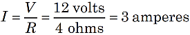
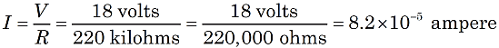
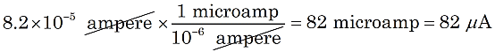

Finding Current with Ohm's Law

Figure 1. A voltage V dropping across a resistor R in a circuit with a current I. |
In the early 1800's, George Ohm discovered a mathematical relationship for electric circuits with simple resistors. With a circuit having a current I (in amperes), the voltage (V, in volts) dropped across a resistance (R, in ohms) is V = I x R. This relationship often appears three ways:


We can use the second form above to calculate the current in a circuit. Suppose a meter measures a "voltage drop" of V = 12 volts across a resistor with R = 4 ohm. Then the current is:

Notice the units: 1 ampere of current is defined as 1 volt per ohm.
You must be careful working with the units. Voltage is often given in millivolts (1/1,000 volt). Resistance may be in kilohms (1,000 ohms) or even megohms (1,000,000 ohms). Resulting current may then be in milliamps (1/1,000 ampere) or even microamps (1/1,000,000 ampere).
Suppose you measure 18 volts across a 220 kilohm resistor. The expected current is:

This very small current would usually be converted to "microamps."

It is often helpful to convert metric prefixes to scientific notation.
| micro- = 10–6 | milli- = 10–3 | kilo- = 103 | mega- = 106 |